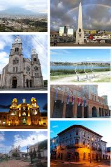

Ibarra, también conocida como San Miguel de Ibarra, es una ciudad ecuatoriana; cabecera municipal del Cantón Ibarra y capital de la Provincia de Imbabura, así como la urbe más grande y poblada de la misma. Se localiza al norte de la región interandina del Ecuador, en la hoya del río Chota, en un valle atravesado en el este por el río Tahuando, al sureste de la laguna de Yahuarcocha, se encuentra a una altitud de 2215 m s. n. m. y con un clima templado seco de altura, con 18 °C en promedio. Es conocida como "La Ciudad Blanca" por sus fachadas blancas con las que se bendijo la reconstruida ciudad en 1872 después del devastador terremoto de 1868. También llamada "Ciudad a la que siempre se vuelve" por su pintoresca campiña, clima veraniego y amabilidad de sus habitantes. En el censo de 2022 tenía una población de 157.941 habitantes, lo que la convierte en la decimoquinta ciudad más poblada del país. La ciudad es el núcleo de la conurbación de Ibarra, la cual está constituida además por ciudades y parroquias suburbanas cercanas. El conglomerado alberga a más de 280.000 habitantes.